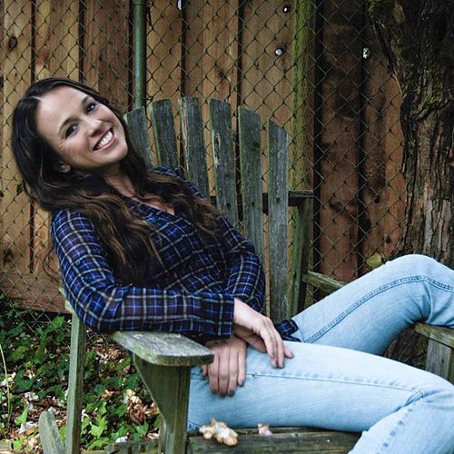
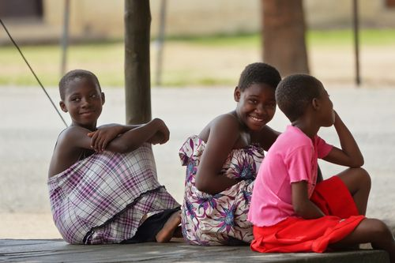

Cultural Intelligence · Ghana
Ghana asked us to wear all white. We complied. Eventually.
Denmark had just thrown the coldest winter in 16 years at us, the map had a gap, and we had a few days. Then we landed in a country where everyone was wearing white except us.

Nancy CarletonAccra, Ghana · 19 September 2026 · 3 min read
People kept asking us why we trekked to Ghana (pardon the delayed post), and the honest answer is that Denmark had just thrown the coldest winter in 16 years at us, the map had a gap, and we had a few days. Sophisticated travel planning, truly.
For context on the cold, we spent weeks knocking thick ice off the canal with our Crocs (thank you, Freed, for demanding we own them) just to go winter bathing. For the uninitiated, that's the Nordic tradition of plunging into icy water, sometimes after a sauna, for the thrill and the chill-induced endorphins. -18.8°C on the worst day. Ghana sounded reasonable.
A quick layover in Amsterdam included a brief debate about whether tulips counted as a travel necessity. Verdict still pending.
We touched down in Accra dressed for a colorful print country, only to discover that in Ghana, on Easter, everyone wears all white. The whole country. Parades, brunch tables, church steps, everyone looking suspiciously photogenic. We looked like the only two people who didn't get the memo, because we were. Cue the markets, then the mall, then a slow-motion negotiation with kind strangers about where one buys white clothing in a country that, on every other day of the year, is not particularly into it.
Sorted. Mostly.
Easter brunch arrived to a soundtrack of 1990s saxophone covers and a dessert table with more Easter-themed sweets and eggs shaped as bunnies than seemed mathematically possible. Pastel everything.
We hiked Mount Afadjato, which was steeper than the brochure implied. Jay carried my water (because husbands). The view at the top was earned, but the best part was at the base, where a circle of kids drumming and singing for Easter sent the sound bouncing through the valley like the mountain had agreed to be an acoustic.
We drove on to Wli Waterfalls, then to Tafi Atome, where monkeys jumped onto our arms like it was their scheduled shift.
Back at our lodge, I made friends with Sofie, a Spanish toddler, maybe two years old, whose Spanish was roughly at my level. We had a meaningful exchange. Her parents, residents of Accra on holiday, gave us the best tip of the trip: a restaurant in town called Buka.
At Buka, I ordered veggie curry, banku, fufu, hibiscus juice, and a fresh coconut. The spice was hot, even for Jay. Three feet away, completely casually, sat the casting director for Lion King kids in London, talking about the theater in Accra.
Magnus Waffles, for the record, stayed home with our extended family, the Meadows, dressed as the Easter Bunny. I have not recovered from the photos.
Ghana gave us drumbeats, hibiscus, monkeys with no concept of personal space, and a sun warm enough to undo a Danish winter.
Quick answers
What do people wear at Easter in Ghana?
White. The whole country. Parades, brunch tables, church steps. If you show up in prints, you will be shopping for white clothes in a country that, every other day, is not particularly into them. Ask me how I know.
Is Mount Afadjato a hard hike?
Steeper than the brochure implied. The best part is at the base, where kids drum and sing and the valley bounces the sound around like it is auditioning for a music festival.
Where should you eat in Accra?
Buka. Veggie curry, banku, fufu, hibiscus juice, and a fresh coconut. The tip came from a Spanish family at our lodge who knew what was up.
Sunburned, well-fed, slightly hibiscus-stained, Nancy and Jay
Ever shown up to a country wearing exactly the wrong thing? Tell me everything.
Replies go to the editor, not to a comment thread. The good ones end up in the Sunday letter, with your pen name.
Tell the editor